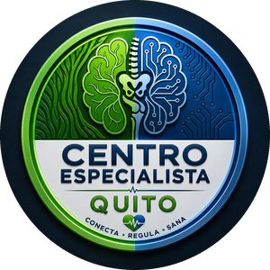

Dolor que no se va, ansiedad que no te deja en paz, secuelas de un ACV o un miedo que te limita — trabajamos sobre el origen del problema, física, neurológica o emocional, no solo el síntoma.
A través de un visor de realidad virtual, te exponemos de forma gradual y controlada a la situación que te genera miedo o ansiedad, siempre acompañado por un profesional. Ideal para quienes no toleran agujas.
Cuando algo se sale de equilibrio, el cuerpo puede quedar atascado en modo de alerta. Ahí es cuando el dolor se vuelve crónico, la ansiedad no baja, o el insomnio no se explica.
Terapia Neural y Acupuntura trabajan directo sobre ese sistema. No tapamos el síntoma: regulamos la señal que lo está causando.
Cuéntanos tu síntoma por WhatsApp.
Te confirmamos tu turno disponible.
Llega 10 min antes. Nosotros hacemos el resto.
El número de sesiones y su costo se define según tu evaluación inicial — no existen dos casos iguales. En la valoración te lo explicamos con total claridad antes de que decidas continuar.
No. Si inicias tu paquete el mismo día, los $30 se descuentan del costo total.
Los precios promocionales aplican solo con efectivo o transferencia. Si prefieres tarjeta (VISA, Mastercard, Discover o Diners), esa opción está disponible al adquirir un paquete completo de tratamiento.
No. Funciona con un visor de realidad virtual, sin ningún tipo de aguja. Es ideal para personas que evitan otros tratamientos por miedo a las agujas.
Cada caso es distinto según el tiempo transcurrido y el nivel de afectación. Por eso el primer paso siempre es la valoración.
Porque trabaja directo sobre el sistema nervioso, que regula gran parte de las funciones del cuerpo. Cuando se desregula, puede expresarse como dolor físico, problema digestivo o ansiedad — por eso un mismo tratamiento ayuda en casos que parecen no tener relación.
Norte · Sector Clínica Pasteur y Metro La Pradera
Sur · Sector Hospital del IESS del Sur y Trole El Calzado
Miles de personas en Quito llegaron con la misma sensación que tú tienes ahora: "ya probé de todo". Escríbenos y te decimos, sin compromiso, si podemos ayudarte.
Escribir por WhatsApp ahora →